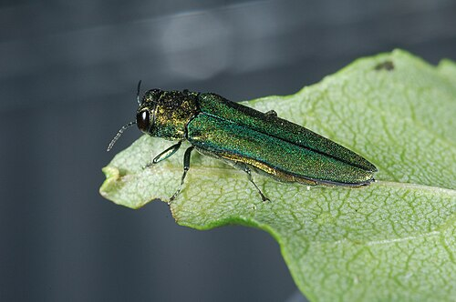
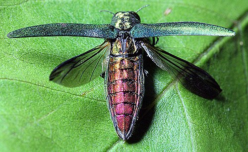
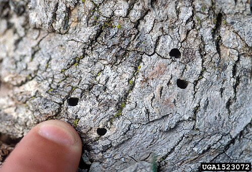
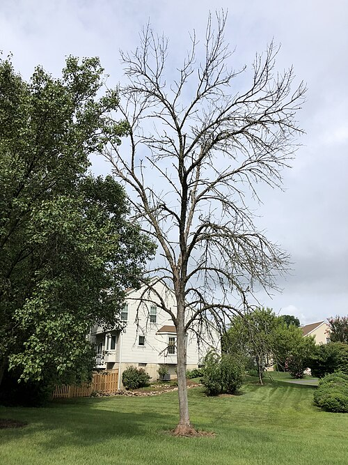
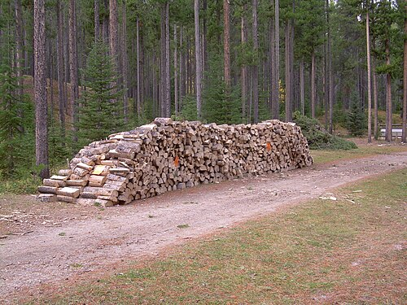

Help save Oregon's ash trees
What is the emerald ash borer?
A small, shiny green beetle from Asia. Its young (larvae) eat the inside of ash trees, and an infested tree dies in 3 to 5 years. It was first found in Oregon in 2022, in Forest Grove.

Facts from the Oregon Department of Forestry.



📍 Is EAB near you?
See if the emerald ash borer has been found in your county.
What you can do

🪵 Don't move firewood. Buy it where you burn it.

🌳 Learn to spot ash trees. Look for 5 to 11 leaflets on one stem.

🔍 Check your ash trees for holes and tunnels.
📖 My Innvadex
🎬 Cutscenes
Monthly challenges
Battles & Forests
See how many people have reported, and where
From reports sent with Pyinsect.
- Your newest report
- Your older reports (only you see these)
- Everyone's reports
Each square is about 200 m wide. No photos and no exact spots are ever shown.
Your reports
Reports sent from this phone. Tap one to see its photo.
Reporting · checking…
Reports that can't be sent right away (no internet) wait on this device and go out later.